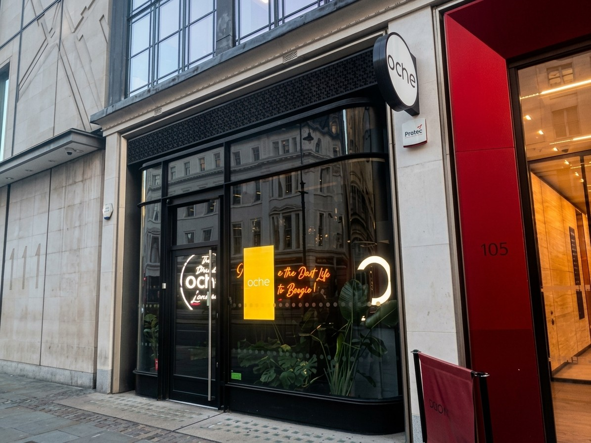

Darts · The Strand
Oche, The Strand
- Darts on real boards with automatic scoring, plus a full kitchen and bar in your own booth.
- £9pp for an hour, £13pp for 1.5 hours, £17pp for 2 hours.
- Sessions run for 1, 1.5 or 2 hours.
- Open Tuesday to Saturday, 18+ from the early evening.

What is Oche, The Strand?
Oche is a darts bar with a full kitchen, not just bar snacks. You play on a real dartboard with steel-tip darts, and sensors track and score every throw automatically, so there's no chalkboard or scorekeeper needed. There are eight games in total, each with its own scoring. It works in a similar way to Flight Club, covered on our Shoreditch page.
Each group books its own oche: a private booth with a dartboard, a screen and table service, so you can eat and drink without leaving the game. The Strand branch is Oche's only UK site, part of a wider chain with venues in cities including Amsterdam, Melbourne and Singapore.
How does it work?
Each oche seats your group for a session of 1, 1.5 or 2 hours, playing through however many of the eight games you choose. You can't bring your own darts, since the scoring system only works with Oche's own set.
The Strand branch opens Tuesday to Saturday: 16:00 to 22:00 Tuesday to Friday, and 12:00 to 23:00 on Saturday. It's closed Sunday and Monday. Players must be at least 13, and the venue is 18+ only from 17:30 on weekdays and 17:00 on Saturday.
How much does it cost?
| Session | Rate |
|---|---|
| 1 hour | £9per person |
| 1.5 hours | £13per person |
| 2 hours | £17per person |
Per person, whatever your group size up to 18 guests. Food and drink are extra. Groups of three or fewer can't book the 2-hour session, and groups of four or more can't book the 1-hour session.
What is the food and drink like?
The menu runs across small plates, grilled mains, pizzas, desserts and bar snacks, all designed to share while you play, alongside full main courses for anyone after a proper meal rather than sharing plates. Vegetarian and vegan options run throughout, and a gluten-friendly base is available for the pizzas. The bar covers wine, beer, cocktails and spirits. The full menu is on Oche's own food and drink page.
How do you get there?
Get directions on Google Maps ↗
105 Strand, London WC2R 0AA. Charing Cross and Embankment are both close, with Covent Garden and Temple also within walking distance, putting it within reach of the Northern, Bakerloo, District and Circle lines. There's no parking at the venue.
How do you book?
Book online through Oche's own site, choosing a date, a time and your group size. Bookings are paid in full within 24 hours to secure the slot, and it's worth arriving around 15 minutes early, since your game starts at the time you booked rather than when you arrive.
Remember the venue is closed on Sundays and Mondays, so bookings only run Tuesday to Saturday.
Common questions
- Who is Oche, The Strand good for?
- Our ratings: groups of friends 5/5, work socials with colleagues 5/5, dates 4/5, families with kids 2/5. Best for groups of friends and work socials with colleagues: Real darts with automatic scoring. Least suited to families with kids: 13+ only, and 18+ from 5:30pm.
- When is the best time to go to Oche, The Strand?
- Best after work (5/5): Opens 4pm, Tuesday to Friday. Then weekend afternoons (Saturday or Sunday) 3/5, late night 2/5, weekday daytime 1/5.
- How much is Oche, The Strand?
- £9 per person for an hour, £13 for 1.5 hours or £17 for 2 hours. The rate is per person, not per booth, whatever your group size, though groups of three or fewer can't book the 2-hour session and groups of four or more can't book the 1-hour session.
- Where is Oche, The Strand?
- 105 Strand, London WC2R 0AA. Charing Cross and Embankment are both close, with Covent Garden and Temple also within walking distance.
- How many people can I book online?
- Online bookings run from 2 to 18 guests. Larger groups, up to 330 across the whole venue, go through Oche's events team instead.
- What is the age policy?
- Players must be at least 13. The venue becomes 18+ only from 17:30 on weekdays and 17:00 on Saturday.
- Is it real darts?
- Yes. Oche uses real dartboards and steel-tip darts, with sensors rather than cameras tracking and scoring each throw automatically.
Who's it for?
Oche, The Strand is best for friends and work socials, and best after work.
Group
- Date★★★★★Your own booth, £9pp for an hour
- With friends★★★★★Real darts with automatic scoring
- Work social★★★★★Booths for 2 to 18, up to 330 via events
- Family★★★★★13+ only, and 18+ from 5:30pm
Best time
- Weekday daytime★★★★★Opens 4pm on weekdays; closed Monday
- Weekend afternoon★★★★★Saturday from noon; closed Sunday
- After work★★★★★Opens 4pm, Tuesday to Friday
- Late night★★★★★Closes 10pm weekdays, 11pm Saturday
Our rating, based on price, age rules, group sizes and opening hours.
You might also like
Similar venues in London
Spotted something wrong on this page: a price, an opening time, a fact that's changed? Tell us and we'll check it.